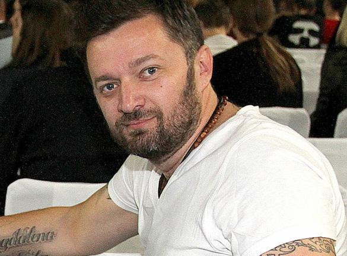

Tomislav Jelić, poznatiji pod umjetničkim imenom Kameny ili DJ Kameny, rođen je 2. svibnja 1973. u Vinkovcima. Glazbom se počeo baviti kroz DJ-ing, a prije nego što je postao dio jedne od najpoznatijih hrvatskih dance grupa, više je godina radio u diskotekama i noćnim klubovima. Istodobno je djelovao na vinkovačkom VFM radiju, gdje je radio kao DJ i sudjelovao u produkciji radijskog programa i jinglova. Upravo je na VFM-u upoznao Borisa Đurđevića, s kojim će nekoliko godina poslije osnovati Coloniju. Njih dvojica dijelili su interes za elektroničku i dance glazbu, a iskustvo rada u klubovima omogućilo im je da dobro upoznaju glazbu koja je krajem devedesetih počela zauzimati sve važnije mjesto na hrvatskoj sceni.
Ideja o Coloniji nastala je upravo iz njihove zajedničke radio i DJ karijere. Boris Đurđević radio je na pjesmama, dok je Jelić sudjelovao u aranžiranju i produkciji, a njihova je zamisao bila napraviti sastav koji bi spojio moderni elektronički zvuk s domaćim tekstovima. Problem je bio jednostavan – ni Boris ni Tomislav nisu bili pjevači. Zato su počeli tražiti odgovarajući ženski vokal. U projekt se uključila Indira Vladić, koju je Boris prethodno upoznao kroz svoj rad i čiji su vokal već koristili pri snimanju radijskih sadržaja. Tako je 1996. nastao tročlani sastav koji će ubrzo postati poznat pod imenom Colonia, nazvanom prema rimskom nazivu Vinkovaca, Colonia Aurelia Cibalae.
U prvim godinama Colonie Jelić je imao ulogu koja se znatno razlikovala od one koju publika obično povezuje s članom glazbene grupe. Bio je DJ, radio je na aranžmanima, bio zadužen za organizaciju živih nastupa, a u jednom trenutku postao je i jedna od glavnih osoba za komunikaciju grupe s javnošću. U javnim biografijama Colonije opisivan je kao ključna osoba za koncerte, dok ga je sama grupa tijekom najuspješnijih godina predstavljala kao svojeg DJ-a i menadžera. Njegova uloga zato nije bila samo glazbena. Dok je Boris Đurđević bio glavni autor glazbe i tekstova, a Indira lice i glas grupe, Jelić je velik dio posla obavljao iza pozornice, povezujući glazbu, nastupe i organizacijski dio cijelog projekta.
Prvi Colonijin singl „Nek' vatre gore sve” objavljen je 1996. i poslan radijskim postajama diljem Hrvatske. Nakon njega uslijedio je „Sve oko mene je grijeh”, koji je postao veliki radijski hit. Debitantski album „Vatra i led” izašao je 1997. godine i prodan je u više od 40 tisuća primjeraka. U godinama koje su slijedile Colonia je nastavila objavljivati albume gotovo u pravilnom ritmu, a Jelić je kao jedan od osnivača ostao dio postave kroz ključne godine njezina razvoja. Njegov rad s Đurđevićem na aranžmanima bio je sastavni dio zvuka grupe, dok je na koncertima često bio zadužen za DJ dio nastupa i organizaciju turneja.
Razdoblje od kraja devedesetih do početka 2010-ih bilo je najintenzivnije razdoblje njegove karijere u Coloniji. Grupa je redom objavila albume „Ritam ljubavi”, „Jača nego ikad”, „Milijun milja od nigdje”, „Izgubljeni svijet”, „Dolazi oluja”, „Najbolje od svega”, „Do kraja”, „Pod sretnom zvijezdom”, „X” i „Tvrđava”. U tom su razdoblju nastupali u Hrvatskoj, ali i izvan nje, a Colonia je razvila izrazito snažnu publiku u pojedinim europskim i azijskim zemljama. Jelić je u intervjuima iz tog vremena nastupao kao član i menadžer grupe, a uz glazbeni dio posla bavio se i koncertnim angažmanima. Godine 2012., primjerice, prije jednog američkog putovanja, mediji su ga navodili kao člana Colonije koji je sudjelovao u vođenju njihove međunarodne koncertne aktivnosti.
Jedan od zanimljivih detalja iz tog razdoblja vezan je uz način na koji je Jelić doživljavao Coloniju i njezin odnos prema publici. Za razliku od klasičnog frontmana, njegova se prisutnost uglavnom vezala uz DJ pult, produkciju i organizaciju, pa je često ostajao izvan središta medijske pažnje. Ipak, upravo je ta podjela poslova omogućila da trojac funkcionira kao zaokružena cjelina: Indira je bila prepoznatljivo lice na pozornici, Boris glavni autor i producent, a Tomislav čovjek koji je povezivao glazbeni i organizacijski dio priče. Njegov doprinos zato se manje vidi kroz javne nastupe i intervjue, a više kroz gotovo dva desetljeća rada iza pozornice.

Nakon 18 godina provedenih u Coloniji, u listopadu 2014. objavljeno je da Tomislav Jelić napušta grupu. Iz službenog priopćenja tada je navedeno da je došlo do sporazumnog razlaza zbog razilaženja u mišljenjima te da se Jelić želi okrenuti novim poslovnim i životnim izazovima. Sam Jelić rekao je da je ponosan na godine provedene u grupi, ali da je nakon toliko vremena došlo vrijeme za neke druge stvari i izazove. Indira je pritom naglasila da je Tomislav bio dio povijesti grupe i osoba koja je zajedno s njima stvarala njezin imidž i viziju. Nakon njegova odlaska Colonia je nastavila kao duo Borisa Đurđevića i Indire Levak, a Jelić je krenuo u novi dio karijere, ovaj put bez Colonije kao središnjeg projekta.
Veliku ulogu u njegovom samostalnom radu imala je izdavačka i producentska kuća Styx Production, čiji je vlasnik od 2007. godine. Jelić je Styx zamislio kao platformu za rad s DJ-ima, producentima i mladim izvođačima kojima je trebalo pomoći da dođu do vlastitih izdanja i šire publike. U godinama nakon Colonije upravo će kroz Styx Production okupiti niz mladih vokala s kojima će raditi na pjesmama, aranžmanima i produkciji. U javnim istupima govorio je da pokušava pomoći izvođačima da izgrade karijeru, a zatim ih, kada se za to stvore uvjeti, povezati i s većim diskografskim kućama. Styx je pritom surađivao s Croatia Recordsom i Aquarius Recordsom.
Godine 2016. Kameny je objavio svoj prvi samostalni singl „Oprosti mi”, na kojem je gostovao Nikola Marjanović. HRT ga je tada opisao kao electro house DJ-a i producenta s dugogodišnjim iskustvom na glazbenoj sceni, a pjesma je označila početak konkretnijeg predstavljanja njegova vlastitog producentskog rada. Uslijedio je niz suradnji s mlađim vokalima, među kojima su bili Iva Ćurić, Dora Vestić, Gregor Klarić i Barbara Dautović, ali i remiksevi pjesama poznatih izvođača. S Ivom Ćurić radio je na pjesmama „Sjajiš”, „Boje”, „Ranjeni” i drugim singlovima, s Dorom Vestić na „Ljetu života”, a s Gregom na pjesmi „Za tebe”.
U njegovom radu posebno se istaknula suradnja s Ivom Ćurić. Jelić je zajedno s Danielom Hojsakom radio aranžmane i produkciju njezinih pjesama, dok je kroz Styx Production sudjelovao i u izgradnji njezina autorskog projekta. Kada je 2022. objavljen njezin debitantski album „Izvan ovog vremena”, Croatia Records je naveo Jelića kao producenta albuma, uz Marinu i Daniela Hojsaka kao dio autorsko-producentskog tima. Na albumu su se našle pjesme koje je taj tim razvijao tijekom prethodnih godina, pa se kroz taj projekt dobro vidi jedna od glavnih promjena u Jelićevoj karijeri: od čovjeka koji se brinuo za DJ i menadžerski dio Colonije postao je producent koji aktivno sudjeluje u razvoju novih izvođača.
Istodobno je nastavio raditi i sa starijom generacijom hrvatskih izvođača. Radio je remikseve za Ninu Badrić i Vannu, a 2020. je objavljen i njegov remix pjesme „Uvijek dio mene” Borisa Štoka. Te je suradnje kasnije objedinio na vlastitom prvom studijskom albumu jednostavno nazvanom „Album”. Album je objavljen 5. ožujka 2021. pod izdanjem Croatia Recordsa i Styx Productiona te sadrži 17 pjesama. Među njima su „Oprosti”, „Ovo je ljubav”, „Sjajiš”, „Eho”, „Kad pogledam tamo”, „Boje”, „Za tebe”, „Ljeto života”, „Ranjeni” i „Enemy”, uz remikseve pjesama Vanne, Nine Badrić, Borisa Štoka i Nikole Marjanovića.
Posebno je zapažena suradnja s Vannom. Nakon što je Kameny napravio remix njezine pjesme „Kad smo se voljeli”, njih su dvoje snimili i zajednički singl „Ovo je ljubav”. Pjesmu je napisala Marina Hojsak, dok su aranžman i produkciju potpisali Kameny i Daniel Hojsak. Singl je u ožujku 2021. ušao i na HR Top 40, gdje je bio najviši novi ulaz tog tjedna. „Ovo je ljubav” kasnije je ušla i među pjesme na njegovu prvom albumu, a suradnja je pokazala koliko je njegov samostalni rad ostao povezan s elektroničkim i plesnim zvukom po kojem je bio poznat još iz vremena Colonije.
Nakon prvog albuma nastavio je objavljivati vlastite pjesme i raditi na produkciji drugih izvođača. U lipnju 2022. objavio je „Running Back”, svoj prvi singl nakon albuma, dok je iste godine nastavio suradnju s Barbarom Dautović na pjesmi „Voli me”. U tom je razdoblju i dalje djelovao kao producent i vlasnik Styx Productiona, a u intervjuu za Radio Vinkovce objasnio je da kroz izdavačku kuću pokušava mladim izvođačima pomoći u razvoju karijere i povezati ih s većim izdavačima. Godine 2023. radio je i na novim projektima Ive Ćurić te aranžirao i producirao dvije verzije pjesme „Ima nešto” Tonyja Cetinskog – remix i extended remix.
Jelić je tako ostao aktivan i izvan vlastitih izdanja, često preuzimajući ulogu producenta i aranžera umjesto klasičnog izvođača. To je i sam naglasio 2021., rekavši da je nekada bio izvođač kojega su angažirali da svira, dok je sada „na drugoj strani” kao producent. U istom razgovoru osvrnuo se i na Coloniju, koju je opisao kao važan dio svojega života. Prisjetio se putovanja, nastupa i rada u studiju povezanih s pjesmama grupe, ali je jasno rekao da nije zainteresiran za ponovno okupljanje originalne postave. Nakon gotovo dva desetljeća zajedničkog rada njegov odnos prema Coloniji ostao je vezan uz prošlost i uspomene, dok je profesionalno nastavio graditi vlastiti producentski identitet.
Izvan same glazbe, Jelić je tijekom godina postao prepoznatljiv i po svom vizualnom identitetu, posebno po brojnim tetovažama. U jednom je intervjuu ispričao da je s obitelji dogovorio kako će svake godine za rođendan napraviti jednu novu tetovažu. Taj detalj dobro se uklapa u njegovu javnu pojavu koja se tijekom godina dosta mijenjala – od člana Colonije iz devedesetih i ranih dvijetisućitih do samostalnog DJ-a i producenta prepoznatljivog po nešto alternativnijem izgledu. Za njegov vizualni identitet i fotografije godinama je bio zadužen fotograf i grafički dizajner Igor CC Kelčec, s kojim surađuje još od 1997. godine.
Njegov producentski rad nastavio se i 2025. godine. U svibnju je Kameny objavio „Neponovljivu”, suradnju s Kim Verson, a produkciju pjesme potpisali su Kameny i Daniel Hojsak. Pjesma je stigla i na hrvatsku nacionalnu listu HR Top 100, gdje se tijekom ljeta zadržala među prijavljenim izdanjima. Nekoliko mjeseci poslije Kameny i Kim Verson surađivali su ponovno na pjesmi „Ona”, za koju su Tomislav Jelić Kameny i Daniel Hojsak radili aranžman i produkciju. Vokalne dionice snimljene su u osječkom Styx Pro Label studiju. Time je Kameny i nakon gotovo tri desetljeća na glazbenoj sceni ostao aktivan u ulozi producenta i aranžera, s radom koji obuhvaća i vlastite pjesme i projekte drugih izvođača.
Tomislav Jelić danas je tako mnogo više od nekadašnjeg DJ-a Colonije. Njegova karijera počela je u vinkovačkim klubovima i na radiju, nastavila se osnivanjem Colonije i gotovo dva desetljeća rada na njezinu zvuku, nastupima i organizaciji, a nakon odlaska iz grupe pretvorila se u samostalan producentski put. Kao Kameny radio je s Vannom, Ninom Badrić, Borisom Štokom, Tonyjem Cetinskim, Nikolom Marjanovićem, Ivom Ćurić, Dorom Vestić, Barbarom Dautović, Kim Verson i brojnim drugim izvođačima. Paralelno je kroz Styx Production pomagao mlađim glazbenicima da dođu do vlastitih pjesama, izdanja i šire publike. Iako njegovo ime nije toliko vezano uz pozornicu kao u vrijeme Colonije, velik dio njegova današnjeg rada i dalje se odvija upravo ondje gdje je počela i njegova priča – iza zvuka, u studiju, na DJ pultu i u organizacijskom dijelu glazbenog posla.